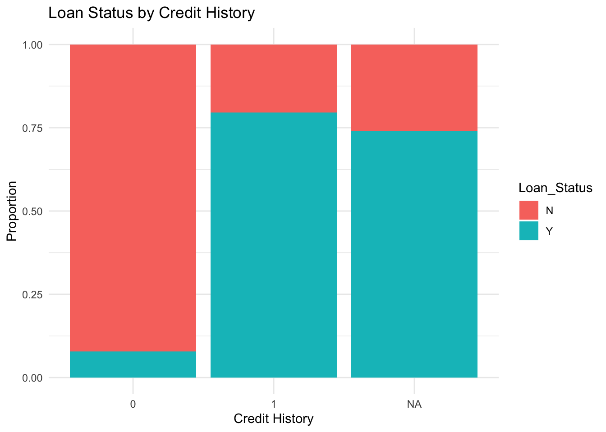
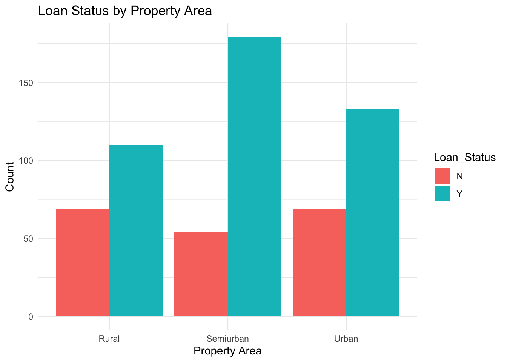

library(ggplot2)
library(dplyr)
Attaching package: 'dplyr'The following objects are masked from 'package:stats':
filter, lagThe following objects are masked from 'package:base':
intersect, setdiff, setequal, union# Load the dataset (replace with actual file path)
loan_data <- read.csv("/Users/aryanpatelkolagani/Downloads/loan_dataset.csv", sep = ";", stringsAsFactors = FALSE)
# Parse columns correctly if needed
if (ncol(loan_data) == 1) {
loan_data <- read.csv("path_to_dataset.csv", sep = ",", stringsAsFactors = FALSE)
}
# Handle missing values
loan_data <- loan_data %>%
mutate(
Loan_Status = as.factor(Loan_Status),
Credit_History = as.factor(Credit_History),
LoanAmount = as.numeric(LoanAmount),
Loan_Amount_Term = as.numeric(Loan_Amount_Term),
ApplicantIncome = as.numeric(ApplicantIncome),
CoapplicantIncome = as.numeric(CoapplicantIncome)
) %>%
filter(!is.na(Loan_Status))Warning: There was 1 warning in `mutate()`.
ℹ In argument: `CoapplicantIncome = as.numeric(CoapplicantIncome)`.
Caused by warning:
! NAs introduced by coercion# Logistic Regression Model
model <- glm(Loan_Status ~ ApplicantIncome + CoapplicantIncome + LoanAmount +
Loan_Amount_Term + Credit_History + Property_Area + Education,
data = loan_data, family = "binomial")
# Display the summary of the model
summary(model)
Call:
glm(formula = Loan_Status ~ ApplicantIncome + CoapplicantIncome +
LoanAmount + Loan_Amount_Term + Credit_History + Property_Area +
Education, family = "binomial", data = loan_data)
Coefficients:
Estimate Std. Error z value Pr(>|z|)
(Intercept) -1.911e+00 8.657e-01 -2.208 0.027254 *
ApplicantIncome 1.112e-05 2.589e-05 0.429 0.667675
CoapplicantIncome -3.112e-05 4.220e-05 -0.737 0.460917
LoanAmount -1.410e-03 1.768e-03 -0.797 0.425300
Loan_Amount_Term -1.981e-03 2.013e-03 -0.984 0.325014
Credit_History1 3.820e+00 4.241e-01 9.007 < 2e-16 ***
Property_AreaSemiurban 1.023e+00 2.880e-01 3.552 0.000383 ***
Property_AreaUrban 2.087e-01 2.785e-01 0.749 0.453622
EducationNot Graduate -3.542e-01 2.870e-01 -1.234 0.217115
---
Signif. codes: 0 '***' 0.001 '**' 0.01 '*' 0.05 '.' 0.1 ' ' 1
(Dispersion parameter for binomial family taken to be 1)
Null deviance: 651.94 on 526 degrees of freedom
Residual deviance: 480.54 on 518 degrees of freedom
(87 observations deleted due to missingness)
AIC: 498.54
Number of Fisher Scoring iterations: 5# 1. Credit History vs Loan Status
ggplot(loan_data, aes(x = Credit_History, fill = Loan_Status)) +
geom_bar(position = "fill") +
labs(title = "Loan Status by Credit History", x = "Credit History", y = "Proportion") +
theme_minimal()
# 2. Property Area vs Loan Status
ggplot(loan_data, aes(x = Property_Area, fill = Loan_Status)) +
geom_bar(position = "dodge") +
labs(title = "Loan Status by Property Area", x = "Property Area", y = "Count") +
theme_minimal()